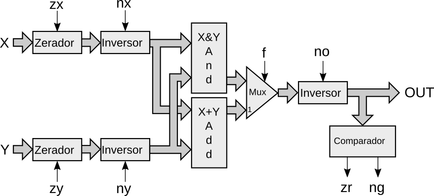

C - ULA
| Entrega |
|---|
| 18/09 - Domingo |

Neste projeto seu grupo terá que desenvolver os componentes para a implementação de uma unidade lógica e aritmética (ULA) de 16 bit (proposta pelo livro texto) que será capaz de realizar operações binárias muito simples porém que possibilitará realizarmos muitas coisas!
Warning
O grupo deve eleger um novo scrum master para essa entrega (diferente do projeto B).
Antes de começar 1
Siga os passos em:
Vixi Sou scrum master 2
Você é o scrum do projeto? Leia:
Vixi! Sou desenvolvedor 3
Seu papel é o de desenvolvedor? Leia:
Instruções
Os arquivos referentes ao projeto são:
hw/ula.py: Script python com os módulos a serem implementadoshw/test_ula.py: Script de teste
Executando o Script de Teste
Abra o terminal na pasta hw execute o pytest
$pytest test_ula.py
Tip 4
Você pode usar o -k MODULO para executar apenas o teste o do módulo que deseja.
Módulos
Deve-se implementar os seguintes circuitos combinacionais:
-
Add
- Modulo :
Add - Descrição : Adiciona dois vetores de 16 bits resultando em um vetor de 16 bits (sem carry out do bit mais significativo - MSB).
- Modulo :
-
Inc
- Modulo :
Inc - Descrição : Adiciona '1' a um vetor de 16 bits resultando em um vetor de 16 bits (sem carry out).
- Dependência:
Add
- Modulo :
-
Inversor
- Modulo :
Inversor - Descrição : Inverte um vetor de entrada quando o bit de controle n (nx ou ny) for igual a '1', e não modifica o vetor de entrada caso contrário. O resultado é um novo vetor de 16 bits.
- Dependência: Não tem.
- Modulo :
-
Zerador
- Modulo :
Zerador - Descrição : Zera um vetor de entrada quando o bit de controle z (zx ou zy) for igual a '1'. Não modifica o vetor de entrada se o bit for '0'. O resultado é um novo vetor de 16 bits.
- Dependência: Não tem.
- Modulo :
-
Comparador
- Modulo :
Comparador - Descrição : Verifica se o vetor de saída (16 bits) é igual a zero (zr) e se menor que Zero (ng). Caso igual a zero, faz com que o sinal zr seja igual a '1' e caso contrário '0'. Se o sinal de entrada for negativo faz com que ng receba '1' e '0' caso contrário.
- Dependência: Não tem.
- Modulo :
Pseudo código :
if(a == 0):
zr = 1
else:
zr = 0
if (a < 0):
ng = 1
else:
ng = 0
- ALU
- Modulo :
ALU - Descrição : A entidade que faz o mapeamento de todas as demais, interligando os blocos (zerador, comparador, inversor, Add ....) em um único bloco.
- Dependência:
Comparador,Zerador,Inversor,Add,
- Modulo :

Testando em HW
Para testar os módulos em hardware, deve-se editar o toplevel.py configurando o módulo que deseja executar na FPGA.
Entrega
A entrega final deve ser feita no ramo master do git.
- Implementar todos os módulos listados
- Todos os módulos devem passar nos testes
- Actions deve estar configurado e funcionando
Rubrica
Warning
Não fazer rubrica A e B na master, criar um novo branch para isso!
C
addincinversorzeradorcomparador-
ula -
Testar na FPGA a ULA e gravar um vídeo dela funcionando.
B - Nova topologia de somador (adder)
Video
Entrega:
addcla4: Somador de 4 bits do tipo carry-lookaheadaddcla16: Somador de 16 bits utilizando 4xaddcla4test_addcl4.py: Teste para verificar o somador de 4 bitstest_addcl16.py: Teste para verificar o somador de 16 bits
Para o conceito B vocês devem implementar um novo somador, com uma topologia diferente da realizada em sala de aula (que é chamado de Ripple-carry adder). O que vocês devem implementar agora é chamado de Carry-lookahead adder, que tem uma topologia que aumenta a velocidade na qual o resultado da adição é gerado.
Para isso deverão implementar dois módulos: addcla4 que é um somador de carry lookahead de 4 bits e então usar quatro deste modulo para criar o addcla16:
addcla4 |
addcla16 |
|---|---|
 |
 |
Vocês encontram mais detalhes na wiki: https://en.wikipedia.org/wiki/Lookahead_carry_unit . Para eu entender melhor, assisti os vídeos:
MyHDL 5
O MyHDL é meio chatinho e vocês tem que lembrar de algumas coisas quando forem implementar o módulo:
aebsão entradas do tipointbv/modbvpara mapearmos um único bit para um módulo já existente é necessário usarmos o tal de shadow signal:
# opcao 1
a_ = [a(i) for i in range(4)]
b_ = [a(i) for i in range(4)]
for i ...:
falist[i] = fullAdder(a_[i], b_[i], ...)
# opcao 2
for i ...:
falist[i] = fullAdder(a(i), b(i), ...)
- Um sinal de entrada do tipo intbv quando mapeado para um módulo nem sempre vira um sinal, a solução é criarmos um sinal temporário, e então atualizar a saída:
q_ = [Signal(bool(0)) for i in range(4)]
for i ...:
falist[i] = fullAdder(.., .., .. , q_[i], ...)
@always_comb
def comb():
for i in range(4):
q.next[i] = q_[i]
Essa é a solução para o erro do tipo:
- E AttributeError: 'bool' object has no attribute 'next'
Como alternativa podemos usar o concatSignal em q_ para não ter que fazer o loop:
@always_comb
def comb():
q.next = ConcatSignal(*reversed(q_))
- Pode ser necessário criar uma variável temporária para podermos escrever e ler de um mesmo vetor:
@always_comb
def comb():
carry = [0 for i in range(5)]
for i in range(5):
carry[i+1] = .... carry[i] # lógica com o próprio valor
Note que Carry não tem tipo e não é um Sinal, e é criado no
@always_combpois ele só é usado para facilitar a criação do HW.
Essa é a solução para o erro do tipo:
- E myhdl.AlwaysCombError: signal ({'cin'}) used as inout in always_comb function argument
A - Mais funcionalidades
Entrega:
ula_new(): Nova ULA com a adição das funcionalidades.bcdAdder(x, y, z): Somador de dois valores em BCDtest_bcdAdder(): Teste do somador em BCDtest_ula_new(): Teste da ULA modificada verificando as funcionalidades.- Diagrama de blocos indicando a nova ULA (no
README.mddo repositório)
Aqui iremos adicionar mais funcionalidades a nossa ULA (mesmo que não precisando) e chamar-la de ula_new, para cada nova funcionalidades vocês devem implementar um novo teste, que:
- Valida individualmente o módulo
- Valida o módulo quando integrado na ULA
Os módulos devem ser integrados na ula_new e um diagrama fornecido indicando como os módulos foram utilizados na nova ULA.
shift right/ left
Deve adicionar duas entradas ao controle da ula: sr (shift right) e sf (shift left) que deslocará o vetor de bits da entrada X da ULA para direita ou esquerda Y vezes, sendo Y o valor da entrada Y da ula.
Para esta nova operação vocês devem utilizar o barrelShifter da entrega anterior que recebe as entradas x e y a direção dir da rotação e resulta em um vetor de saída z com o resultado da operação.
BCD adder
Iremos considerar que a nossa ULA pode tratar as entradas X e Y como números em BCD e pode realizar uma operação de soma entre eles. Para essa operação vocês devem criar um novo módulo bcdAdder(x, y, z) que recebe dois vetores de entrada x e y e resulta em um novo vetor z que é a soma em BCD dos valores.
Exemplo: x=0000000000001000, y=0000000000001000 ==> z=0000000000010110